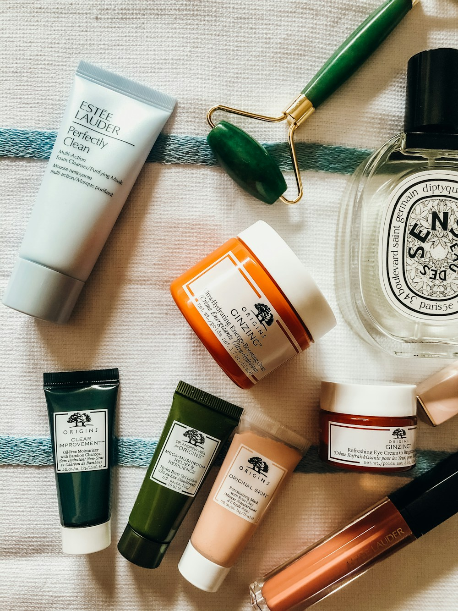

Founded on the belief that the humblest garment in your wardrobe deserves the highest standard of engineering, organic purity, and anatomical comfort.
For decades, the modern sock industry has prioritized speed and cheap petroleum-based synthetic fibers over breathability, foot health, and craftsmanship.
At CottonKnitPod, we set out on a different trajectory. We revived traditional double-cylinder circular knitting methods, pairing them with the finest GOTS-certified long-staple combed cotton and hand-linked seamless toe closures.
By focusing exclusively on natural organic fibers, precision needle gauges (from 96 to 200 needles), and anatomically sculpted Y-heel pockets, we create socks that stay in place, breathe naturally, and maintain their plush softness across years of daily wear.

How we maintain uncompromising quality standards across every production run.
We believe that foot health begins with breathable natural fibers. We use pure ring-spun combed organic cotton and fine merino wool, eliminating direct skin contact with synthetic plastics.
Circular knitting produces virtually zero cutting scrap compared to cut-and-sew manufacturing. Any discarded yarn remnants are recycled directly back into industrial padding and insulation.
Every pair is produced in mills that respect fair living wages, safe working environments, and master craft apprenticeship traditions in textile knitting and linking.